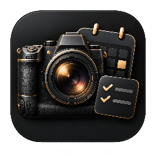

撮影に集中できる準備
撮影案件、撮影日時、納期、進捗、機材、チェックリストを整理。依頼元・撮影先・担当者のつながりを確認できます。
PHOTOGRAPHER’S WORKSPACE
MY WORKは、フォトグラファーのための個人用業務管理アプリです。AndroidとWindowsで、案件・撮影準備・連絡先・資料をまとめて管理します。
Android / Windows
撮影案件、撮影日時、納期、進捗、機材、チェックリストを整理。依頼元・撮影先・担当者のつながりを確認できます。
案件、クライアント、名刺の登録情報、メモ、資料を横断検索。通常検索とローカルAI秘書は端末内の保存データを使用します。
任意のGoogle連携で、アプリ専用の暗号化データをGoogle Driveへ保存。AndroidとWindows間で同期し、変更の競合を確認できます。
業務データは端末内に暗号化して保存します。Google Drive同期は利用者が有効にした場合のみ行い、共通パスワードで暗号化して送信します。通常検索で外部AIへ情報を送りません。外部AIは任意の設定・操作で利用します。
プライバシーポリシーを読む →